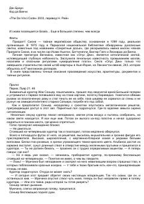

DVLuvrdagi sirli qotillik va qadimiy sirlarni ochishga qaratilgan hayajonli detektiv roman.
Ushbu asar Parijdagi Luvr muzeyida sodir bo'lgan sirli qotillik va uning ortida yashiringan qadimiy sirlar haqida hikoya qiladi. Bosh qahramon Robert Lengdon qotillikda gumon qilinib, haqiqatni ochish va o'zini oqlash uchun murakkab jumboqlarni yechishga majbur bo'ladi. Roman tarixiy faktlar va badiiy to'qimalarni o'zida mujassam etgan mashhur detektiv asardir.